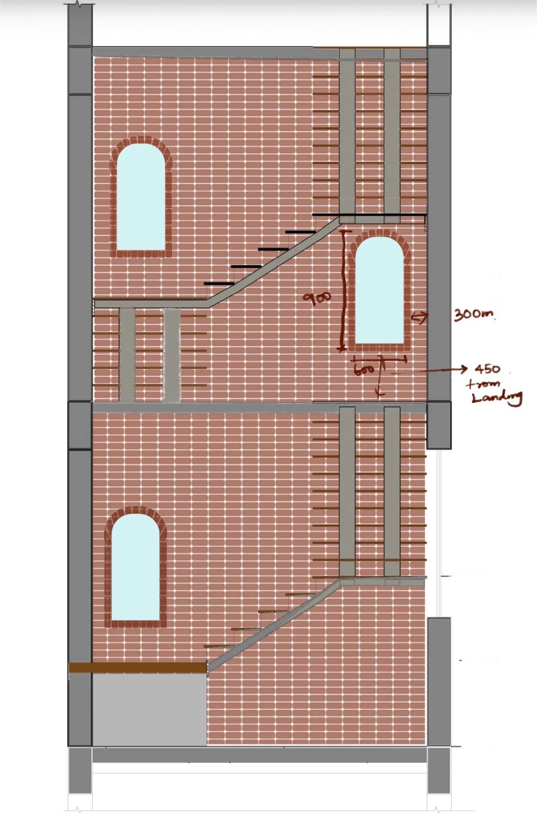
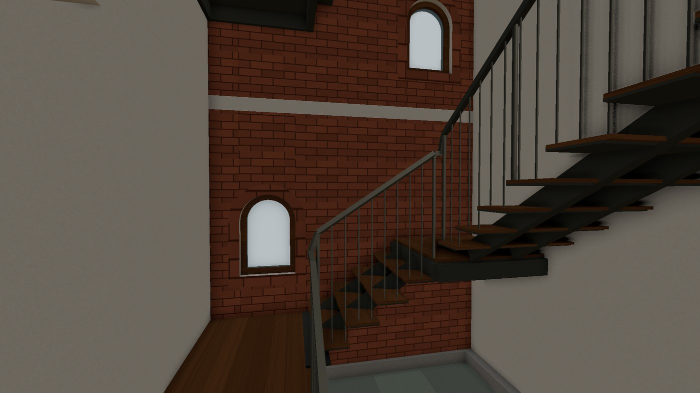
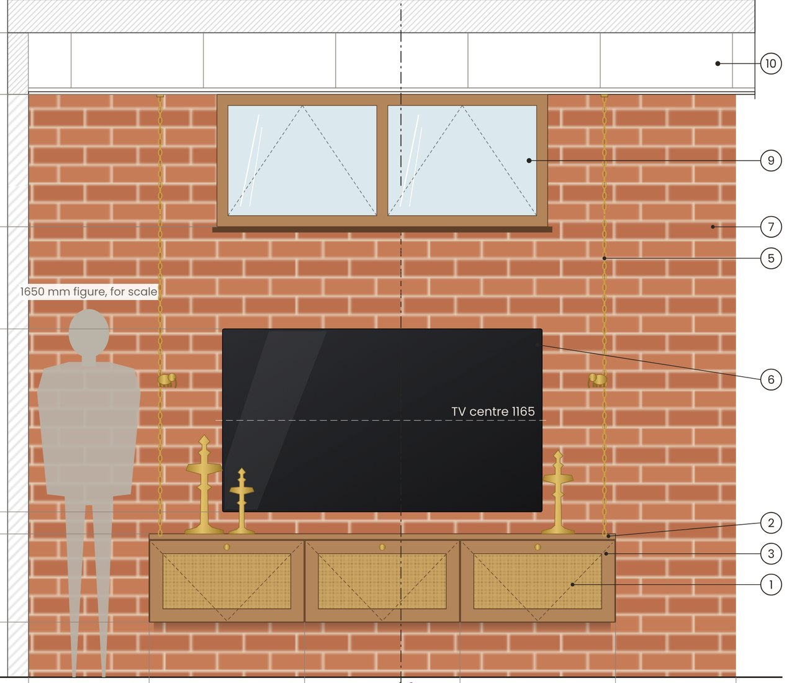
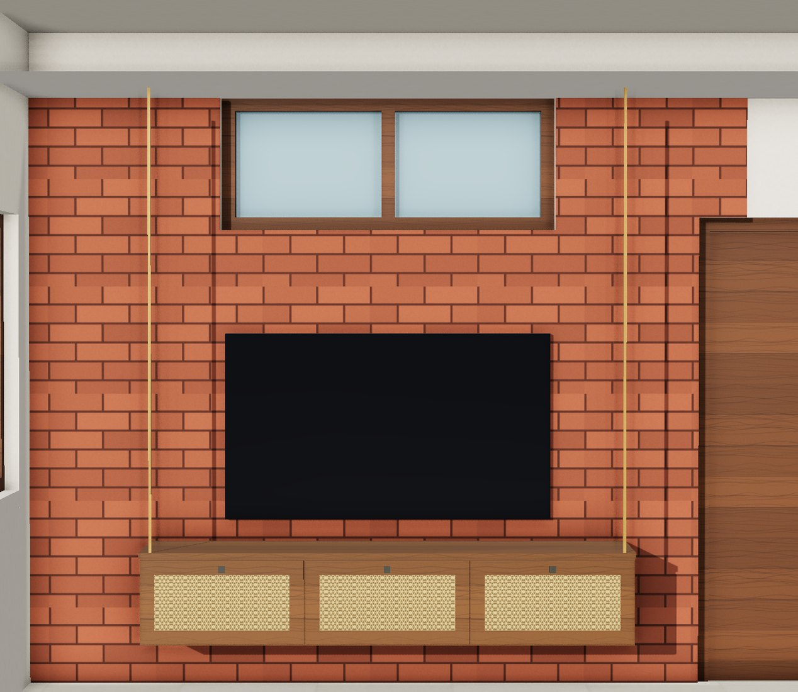
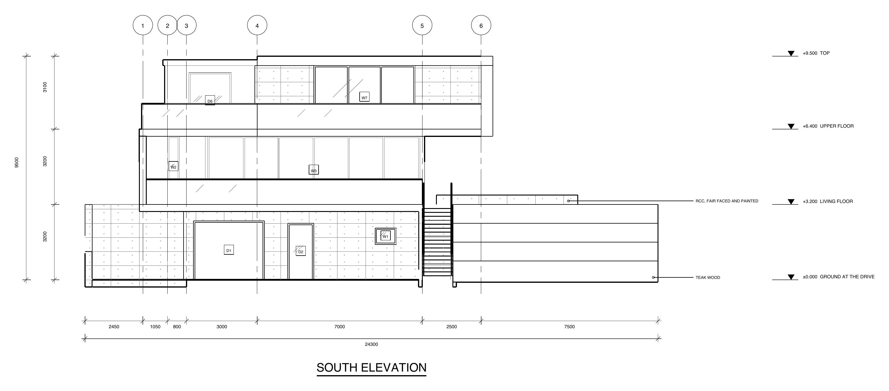
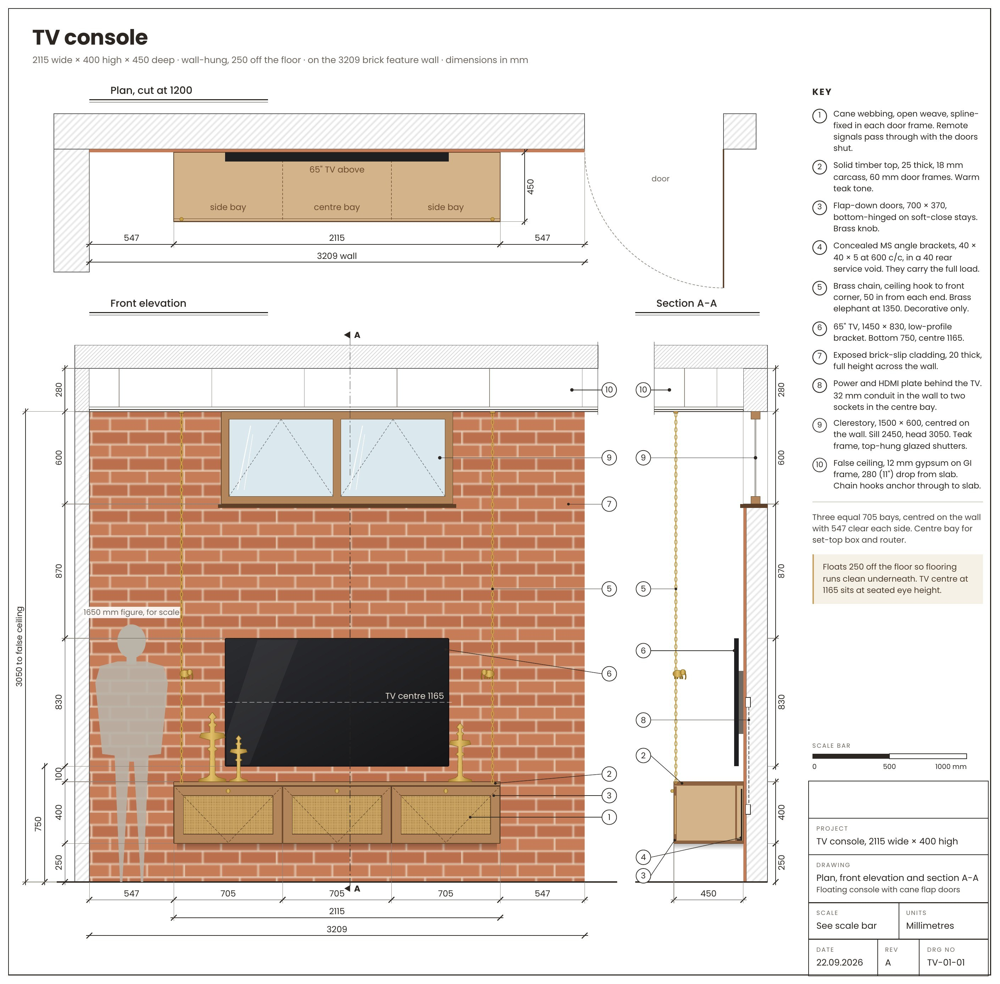
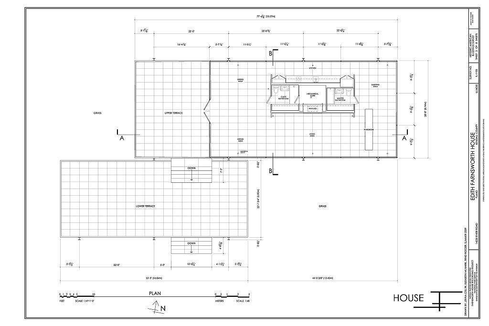
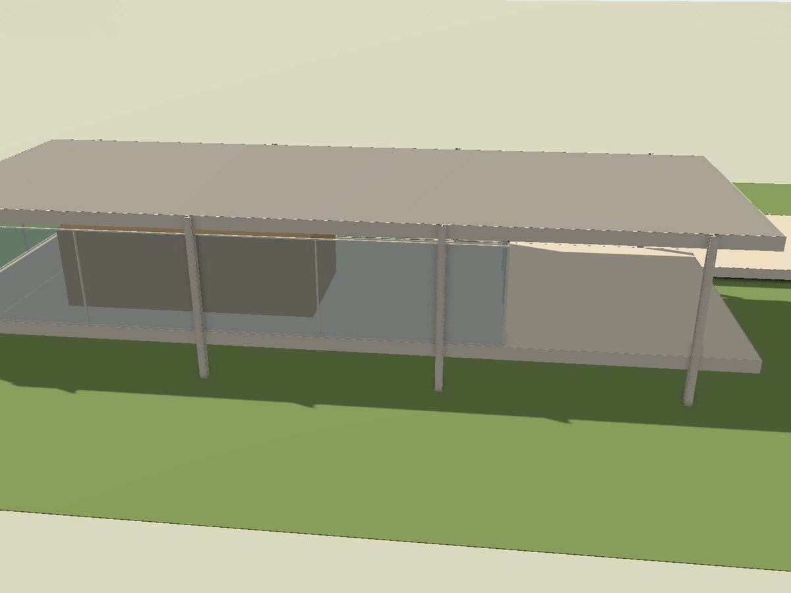
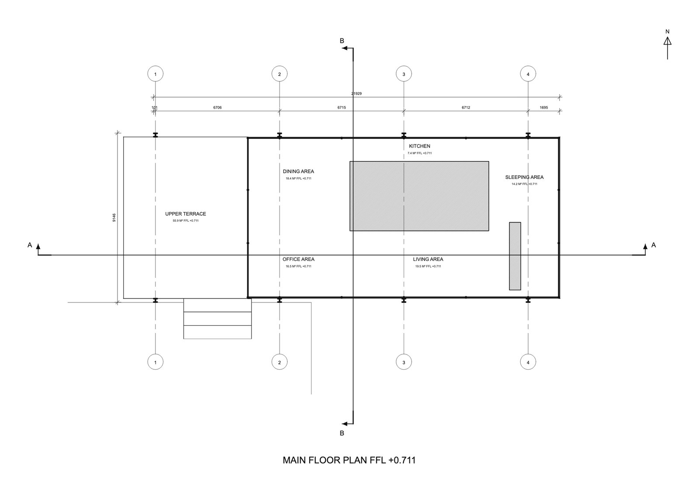

One flow, one model. Bring in what you have and Idam reads it into a model where every element knows what it is, draws its plans, elevations and sections, and produces the dimensioned construction set from the same model, as DWG.
Idam is not a BIM authoring tool and doesn't replace Revit. It covers the stretch between an early model and a coordinated construction set. It hands off as DWG, and as IFC 4: every element exports as its IFC class (wall, slab, column, beam, door, window, stair, roof, space…) on its storey, so the model can join a federated BIM workflow for coordination. Geometry goes as meshes, not parametric families.
Scale, honestly
The largest model so far is a three-storey family house of about 360 m² across its floors, at just over a thousand elements. Nothing hospital-sized has been tried. A six-storey building, several buildings on one site, or a set split across many drawing files is untested, and it's exactly what the pilots are for.
Working together
Today one person edits a model at a time. Others can follow it through a live link that updates as the work goes on, or open a fixed copy and pin comments to it. Several people editing one model at once, with roles across offices, is not built yet.
Your drawings
DXF drawings are read in the browser; a DWG is converted on Idam's server and the file deleted straight after. Projects are kept in your browser and, when you sign in, on Idam's server. When you ask the assistant, your request, any picture you attach and a view of the model go to Anthropic's API, which does not train on them under its commercial terms.
Disciplines are layers that run through every stage
Not separate products: one model carries them all, and each stage shows them as layers you switch on.
ArchitectureThe building's fabric
StructurePositions only: columns, beams, grids
ServicesElectrical and plumbing points
InteriorsSurfaces, joinery, ceilings, floors
LandscapeThe ground and what is on it
Architecture: the wall as built fabric
Masonry and its thickness, the openings in it, the plinth, sill and lintel levels, the gate and the compound wall.
Interiors: the wall as a designed surface
Feature walls (the TV wall, the living room's accent wall, the bed's back wall), panelling, cladding, joinery, wall elevations, the false ceiling and the flooring pattern.
91 / 91
Walls, doors and windows on a studio's ground floor, read correctly from its DWG
0 lines lost
Written to DWG and read back: every line, arc and note where it was
To the mm
Landings and levels in section, measured against the studio's own drawing
Under a minute
Three floors of a studio's drawing set, read in
The whole flow, recorded as it happened
No mock-ups. A studio's drawing file in, three floors in under a minute, a stair wall changed from the architect's sketch, then the DWG out. The assistant's thinking time is shown fast, with the real time on screen.
1Model
Bring in a plan, a SketchUp model or a render. Idam reads it into an accurate, editable model where every element knows what it is: wall, opening, plinth, sill, lintel, column, beam.
A plan Today
DWG, DXF, a PDF set or a photo of a sketch. A studio's three floors read in under a minute; what the reader is unsure of, it asks before it builds.
A SketchUp model Next
Brought across as walls, floors and openings you can edit. Today a model from anywhere comes in as a .glb piece you can place and move.
A render Today, by spot
Point at a wall and show it a render or a photo: its windows, jali or cladding are built there, at size. A whole building read from a render is next.
The wall as built fabric. Masonry and its thickness, every door and window, the plinth, sill and lintel levels, columns, roofs and stairs, read from the drawing and checked against it. Change a facade by showing it a sketch or saying what you want. Today
Gate and compound wall details: next.
Positions only. Columns and beams where the drawing puts them, on the structural grid Idam finds from the load-bearing walls; upper floors registered over the ground floor by their columns. Sizes and reinforcement stay with the structural engineer. Today
Electrical and plumbing. Switches, sockets and light points, sanitary fixtures and their runs, placed on the same walls and floors so they move with them. Next
Today, kitchen and toilet fittings come in from the plan's blocks.
The wall as a designed surface. Feature walls (the TV wall, the living room's accent wall, the bed's back wall), panelling, cladding, wardrobes and TV units, false ceilings and flooring patterns, built from a reference picture at the spot you point to. Today
The ground and what is on it. The site from the drawing: boundary, contours and levels, steps and ramps, water, rock, paving and decks, with step-free routes checked as you go. Today
Planting: next.
Loading the model…
Exported from Idam as it stands. Drag to turn, scroll to zoom, point at anything to see what it is.
Change it by showing or saying
Drag across each picture. On the left, the architect pointed at a stair wall and attached a sketch; Idam's assistant asked one question, then built three arched windows at the sketch's sizes. On the right, a family house's TV wall in the model, against its working drawing.


The sketchThe model
Architecture layer: a sketch of the stair wall. Exposed brick, three arched windows 600 wide, 300 from the side walls, 450 over each landing. The assistant asked what the sketch can't say, then placed them to the millimetre.


The drawingThe model
Interiors layer: a TV wall, drawing and model. Brick-slip cladding up to the false ceiling, a 1500 × 600 clerestory just under it, the 65" TV centred at 1165, and a 2115 console floating 250 off the floor on cane doors and brass chains. Drag across: on the wall, they line up.
2Drawings
Plans, elevations and sections generated from the model, never redrawn: change the model and every sheet follows. Written to DWG with every layer at its pen.
Elevations in depth, nearer planes heavier; true cut sections with the cut solid; plans cut at sill height. Today
The grid and the column positions on every plan, elevation and section. Today
Lighting and wiring, switches and power, and plumbing layouts over the plan, with their legends. From the model: next
Services held in the model, so they move with the walls.
Furniture, fittings and floor finishes on the plans; rooms named and sized. Today
An elevation of every wall and the false-ceiling plan: next.
The site with the building on it: spot levels, terraces and retaining walls, the drive, the pool and the planting, drawn from the model. Today

Not in the set yet: this layer's drawings are next.
Click to zoom; drag to look around.
3Working drawings
The construction set (GFC), produced automatically from the same model: setting-out grids, running dimensions, levels, wall sections at 1:20, door, window and room schedules, and quantities by material. Dimensioned and weighted, as DWG.
Dimensioned plans on their grid, levels on every floor, wall sections at 1:20, door and window schedules. Today
Gate and compound wall details: next.
Column and beam positions dimensioned to the grid, for the structural engineer to size. Today
Lighting setting-out, and toilet part plans at 1:25 with their elevations, every point dimensioned from the walls. From the model: next
Joinery working drawings like these (a TV console on its brick feature wall, a crockery unit): plan, front elevation and section, dimensioned, with a numbered key of materials and fixings. From the model: next
Today the model carries the joinery, and the room schedules and quantities come from it. False-ceiling plans and flooring layouts: next.
A site laid out to the boundary: garden walks, paving, water and planting dimensioned to a grid. Today

Not in the set yet: this layer's working drawings are next.
Click to zoom; drag to look around.
From a survey drawing, too
The same process on a landmark, from the U.S. government's measured survey: a model from one survey plan, and a set drawn from the model.
The Farnsworth House
Ludwig Mies van der Rohe, 1945–51. Model from one survey plan, HABS IL-1105 sheet 3 (Library of Congress; public domain). Not Mies's drawings.

The survey's plan

The model in Idam

Its set, drawn from the model
Built by an architect, for architects.
Idam is in private build in Chennai, piloting with design studios in India. An early-access group for design studios opens shortly. If Idam looks relevant to how your teams work, I'd welcome a short conversation, and a real project drawing to test it against is worth more to me than any demo.
Ishwarya Suresh: architect (Anna University), and UX designer and researcher (MSc HCI, Newcastle University; CHI 2024 publication). Five years across fintech, healthcare, accessibility and the public sector, including GDS-standard service delivery at MHCLG. Practises architecture in Chennai, where Idam is being tested.